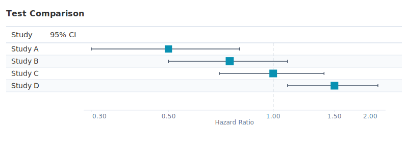
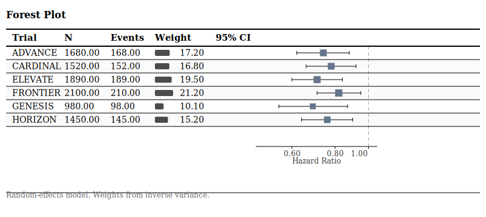
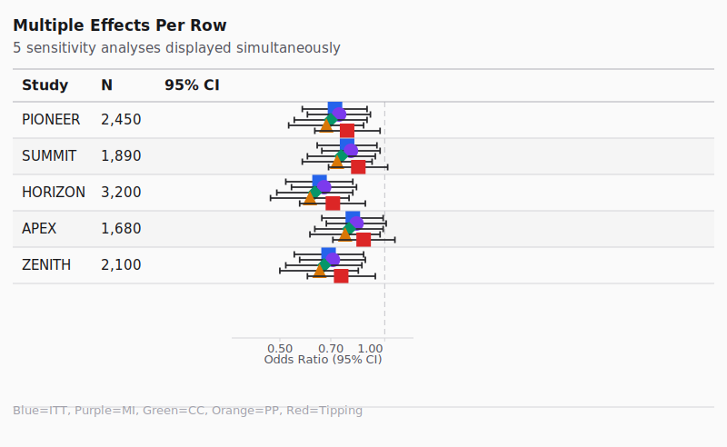

Web View vs SVG Export Comparison
Tips for comparison:
Open browser DevTools (F12) on the Web View to inspect element positions
Look for misaligned reference lines, interval endpoints, and markers
Check that axis ticks align with interval endpoints at same values
Web View (HTML Widget)
SVG Export

Key Points to Verify
Reference Line Position:
The dashed vertical line at HR=1.0 should be at the same relative position
Interval Endpoints:
CI whiskers should align with their corresponding axis tick values
Marker Position:
Point estimate markers should be at the correct x-position
Marker Size:
Weight-scaled markers should be proportionally sized
Clipping Arrows:
If any CI extends beyond axis, arrows should appear at axis boundaries
Gallery Examples
gallery_15_minimal.svg

gallery_02_multi_effects.svg
